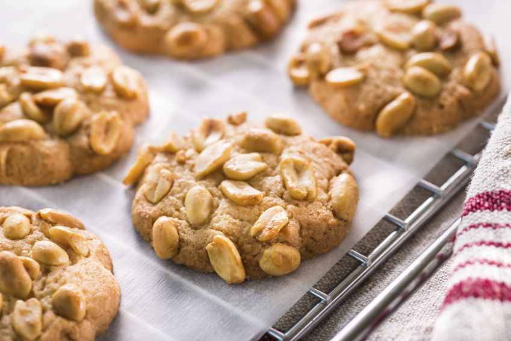
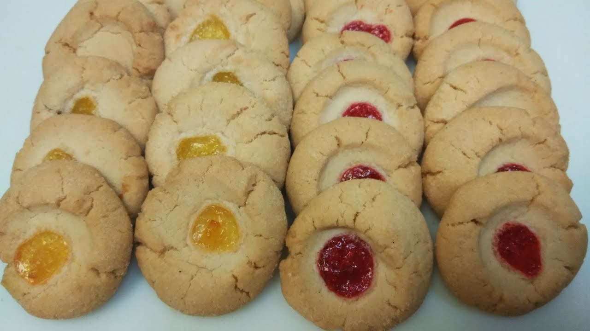
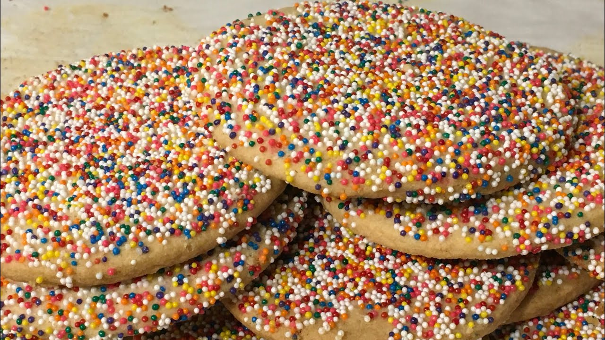

Inicio- Panes-Galletas2
Panaderia de Pan
Vendemos las mejores galletas de nuestro sector, hasta se podria decir que son las mejores del departamento en el cual estamos a continuancion veras una tabla donde hay algunas de nuestras galletas
Listado de nuestras galletas
| Galletas |
De que estan hechas? |
Costo |
| Galleta De Mani |
mani,con leche y mucho amor |
$700 pesos |
| Galleta de chipitas |
Chispitas,Harina, leche y mucho amor |
$900 pesos |
| Galletas de Punto rojo |
harina, leche, bocadillo y mucho amor |
16:00 - 20:00 |
Muestra de un poco de nuestras galletas,
¡¡¡ANTOJATEEEE!!!
Galleta De Mani!!
Ingredientes para hacer Galletas de maní:
80 gramos de mantequilla de maní de chocolate
40 gramos de manteca
40 gramos de azúcar
1 huevo chico o medio huevo grande
100 gramos de harina 000
1 cucharadita de Polvo de hornear
1 pizca de sal

Galleta De Punto rojo
Ingredientes para hacer galletas de bocadillo:
1 polito de margarina
1 taza azúcar
2 huevos
1 libra harina de trigo
1 cdta bicarbonato
1 barra bocadillo de guayaba picado en trocitos pequeños

Galleta De Chispitas
Ingredientes para hacer Galletas con chispas de chocolate caseras
2 tazas de Harina (280 gramos)
2 unidades de Huevos
1 taza de Chispas de chocolate
1 taza de Azúcar (200 gramos)
1 taza de Mantequilla (225 gramos)
1 cucharadita de Polvos para hornear
